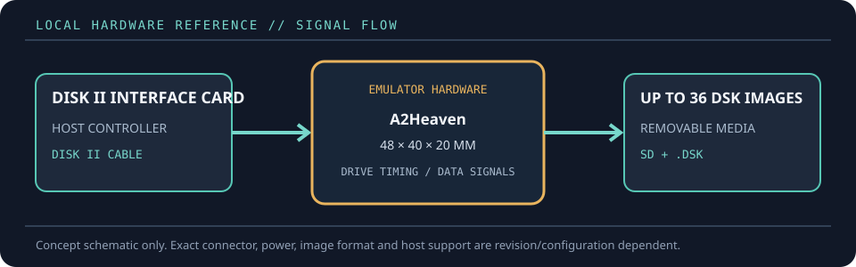

[ FLOPPY EMULATORS // IDENTIFIED HARDWARE ]
A2Heaven SDFloppy II
A model-specific record for a physical floppy-drive emulator. It distinguishes the emulator hardware, removable media and host-facing drive signals; firmware support alone does not establish compatibility with a particular machine.

MODEL IDENTIFICATION: PRODUCT RECORD: A2Heaven SDFloppy II. Compatibility is conditional on the actual host’s connector, controller, signal conventions, drive geometry, firmware and media configuration; do not infer fit from connector count or nominal drive size alone.
Recorded specifications
| Cataloged part | A2Heaven SDFloppy II |
|---|---|
| Manufacturer / project | A2Heaven |
| Product family | Compact SD-based Apple II Disk II emulator |
| Drive bay / physical fit | Small 48 × 40 × 20 mm board/enclosure; external to the computer or mounted separately. Not a standard 5.25-inch drive-bay replacement. |
| Host interface / power | Connects to an Apple II Disk II interface card using the device cable; SD card socket, image-selection/refresh buttons and activity/current-image/write indicators. |
| Removable media / image format | SD/SDSC/SDHC/SDXC with FAT16 or FAT32; reads and writes DOS 3.3 or ProDOS disk-image files in .DSK format, with up to 36 image entries per card per manufacturer. |
| Host compatibility | Apple II series computer with a Disk II interface card and compatible host configuration. It emulates the Disk II drive role; it is not a direct disk-port device like wDrive. |
| Variants and identification | A2Heaven SDFloppy II is a dedicated small Disk II emulator with its own selectable-image panel. Identify the board revision and SD card when documenting observed behavior. |
Compatibility and handling
- A Disk II interface card is required; check slot/card configuration and cable orientation for the particular Apple II model.
- Although the vendor lists broad SD card classes, use a known-good FAT16/FAT32 card and preserve a clean copy of source images.
- The manufacturer documents DOS 3.3/ProDOS .DSK images and read/write operation; do not assume WOZ-level copy-protection representation.
Before installation, compare the emulator’s exact revision and interface against the host service documentation. Confirm connector keying and pin one, power voltage/polarity, drive select, motor/disk-change signals, expected density and image geometry. Preserve a read-only copy of original disk images and configuration files before experimenting.
Model notes
A2Heaven SDFloppy II is a dedicated small Disk II emulator with its own selectable-image panel. Identify the board revision and SD card when documenting observed behavior.
SD/SDSC/SDHC/SDXC with FAT16 or FAT32; reads and writes DOS 3.3 or ProDOS disk-image files in .DSK format, with up to 36 image entries per card per manufacturer.
Sources & further reading
- A2Heaven — SDFloppy II product recordManufacturer product description with physical dimensions, SD formats, image types and host requirement.
- A2Heaven — product documentation PDFManufacturer-hosted technical documentation associated with the SDFloppy product page.
Manufacturer statements describe product capability, not guaranteed operation on every revision of the named host. Confirm current manual, firmware and wiring before installation.